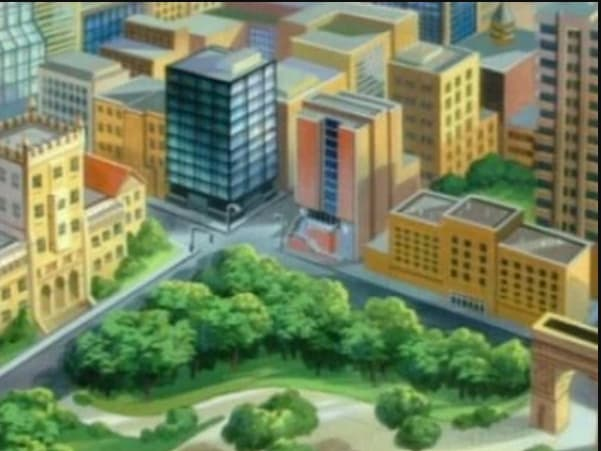
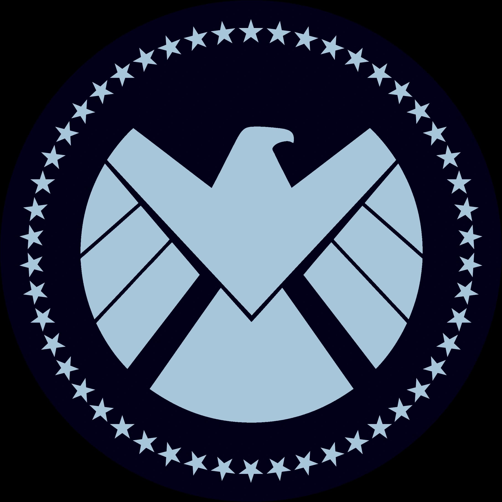
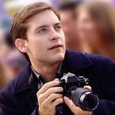

RESUMEN PROFESIONAL
Científico multidisciplinar con un don para estar en el lugar adecuado en el momento más inoportuno. Experto en capturar la noticia antes de que ocurra y en diseñar soluciones tecnológicas con presupuestos de estudiante. Busco una oportunidad donde mis habilidades de investigación (y mis reflejos) sean puestos a prueba.
EXPERIENCIA LABORAL
2018 - Presente
• Especialista en fotografía de acción extrema y "sujetos de difícil acceso".
• Documentación visual de crisis metropolitanas bajo presión crítica.
• Único fotógrafo capaz de conseguir primeros planos del "Trepamuros".
2020 - 2024
• Asistente directo en proyectos de nanotecnología y sistemas de soporte vital.
• Desarrollo de prototipos textiles inteligentes con alta resistencia al impacto.
FORMACIÓN ACADÉMICA
GRADO EN BIOFÍSICA - ESU
DIPLOMA DE SECUNDARIA - Midtown School of Science and Technology

Grado en ESU
I+D Stark
Prensa NY